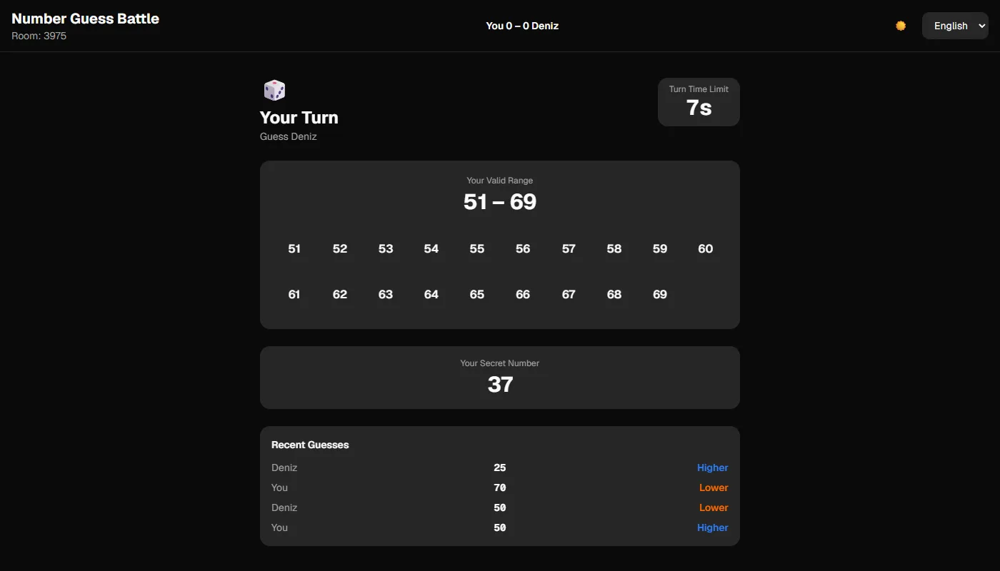
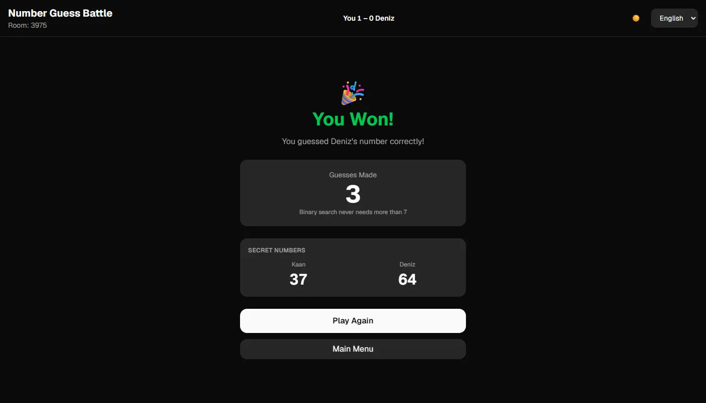

number guess battle: two browsers, one relay, no shared server state
Number guess battle is a two-player game in Turkish and English. Each player locks a secret number, then you take turns guessing the other's. Every answer is higher, lower or correct, and your valid range narrows after each guess. First to hit the number wins. It's live at kaandinc.com/number-guessing, with an online mode through a room code and a solo mode against the computer.
The stack is Next.js 16 with React 19 and Tailwind 4. The interesting part is what's not there: no database, no accounts and no game logic on the server. The server is an 80-line WebSocket relay that knows which two sockets share a room and forwards their messages. Everything else happens in the two browsers.

A relay instead of a backend
The first version synced through a hosted realtime service. It worked, but every game depended on a third party for something very small: two clients sending each other a few JSON messages. So I replaced it with my own relay on the ws package, attached to the same Node process that serves the Next app.
The relay understands three messages. create picks an unused 4-digit code, join puts a second socket in that room (or answers not_found or full), and broadcast forwards any event to the other member. When a socket closes, the other one gets peer_left. A ping every 30 seconds drops dead connections and keeps proxies from closing idle ones. It never reads the payloads, so it has no game rules to get wrong.
} else if (msg.type === 'broadcast' && ws.room && typeof msg.event === 'string') {
const out = JSON.stringify({ type: 'broadcast', event: msg.event, payload: msg.payload ?? {} })
for (const peer of rooms.get(ws.room)) if (peer !== ws) peer.send(out)
}Rules as pure functions
The game state lives in React context, but the rules don't. Answering a guess, narrowing the guesser's range, ending the game, counting wins and resetting a round are plain functions in one file that take a state and return the next one. The online path, the solo path and the tests all call the same ones, so a rule can't drift between modes, and the tests run on node --test straight against the TypeScript file, with no build step and no framework.
The secret number never leaves your browser
The first working version had a quiet problem: when you locked your number, it was sent to the opponent with the ready flag. The UI never showed it, but anyone with the network tab open could read it from the WebSocket frames and win on the first guess. The fix was to change who answers. Now each browser answers guesses against its own number. The guesser sends guess_made, the owner computes higher, lower or correct, and sends back only that.
The numbers still need to show up on the end screen, so they're revealed after the winning guess and not before. The loser sends their number with the result that ends the game, and the winner sends theirs back in a reveal message. The honest limit is the other direction: since each browser answers for its own number, a modified client could lie about "higher" or "lower". Closing that needs the server to hold the numbers, which is exactly the shared state I wanted to avoid. For a game between friends, hiding the number is the part that matters.
Coming back after a refresh
With all state in the browser, refreshing the page used to end the game. Now the state and the player id are written to sessionStorage on every change. It survives a reload but not closing the tab, which is the right lifetime here. On load, a saved game reconnects to its room code and asks the opponent for the current state.
The player who stayed is the one who knows the truth while the other is away, so their state wins, with one exception: the returning player's own secret number, which only they ever had. A few details make it hold together:
- When the relay says
peer_left, the game isn't cancelled straight away. The remaining player sees a banner, their turn timer pauses, and they can't guess, because nobody would answer. After 30 seconds without a rejoin, the game is called off. - The restored page starts with nobody's turn, so the returning player can't guess before the real state arrives.
- If the remaining player had guessed just as the other dropped, that guess never got an answer. On rejoin, it's taken back and the turn goes back to them.
- A lock-in that was sent but never arrived is sent again, so the round can't stall in number selection.
A bot you can beat
Solo mode makes the computer player 2. It never touches the relay: the bot locks a random number, and after each of your guesses it takes its turn 1.5 seconds later, through the same rule functions. Its guess is a random number inside its narrowed range. Guessing the midpoint would be one line, but then it plays perfectly and wins whenever it goes first. A random guesser still closes in, it's just slower, and that's what makes it beatable.

The end screen also shows how many guesses halving the range would need at most: ⌈log₂(n + 1)⌉ for n numbers, so 7 for 1–100 and 14 for the full 1–9999 range. It doesn't change the game, but it tells you whether you won through strategy or luck. The score in the header carries over to rematches.
A static site and a relay on two hosts
The page is a GitHub Pages project, served from /number-guessing. Next's static export handles the sub-path with basePath, but the metadata icons don't get the prefix, so the config passes the base path to the app as an environment variable and the icon URLs use it. A GitHub Actions workflow runs the tests, builds the export and deploys it on every push to main.
Pages can't run a WebSocket server, so the relay runs on a small VPS under pm2, behind a Cloudflare-proxied subdomain. Cloudflare provides TLS for the browser and talks plain HTTP to the server. That last leg is unencrypted, but it only carries game moves and player names, so it's an acceptable trade for not running a certificate on the box. The relay URL is a repository variable that the build bakes into the page. If it's unset, the build hides the online buttons and the site still works as a solo game. The same repo also runs as one Node server with the relay on the same host, which is how it's tested locally.